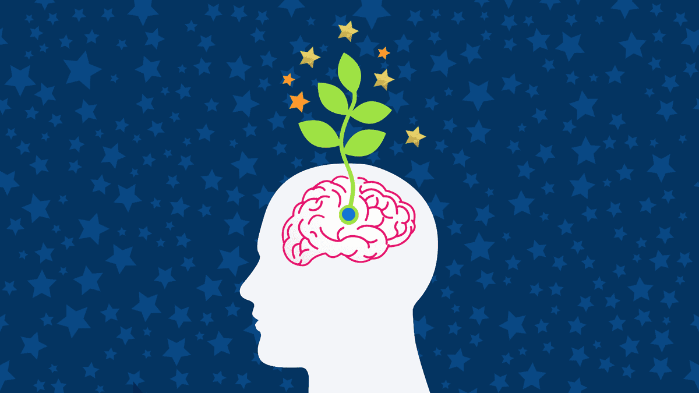

In the journey of life, our mindset plays a crucial role in determining our success and happiness. A strong mindset can help us navigate challenges, stay resilient in the face of adversity, and achieve our goals. But how do we cultivate such a mindset? Let’s explore the key steps to preparing and strengthening your mindset.
Understand the Power of Your Mindset Your mindset is the lens through which you view the world. It influences how you interpret events, make decisions, and interact with others. There are two primary types of mindsets: fixed and growth. A fixed mindset believes that abilities and intelligence are static, while a growth mindset embraces learning, effort, and development. To prepare a strong mindset, you must first recognize the power of adopting a growth mindset. Believe in your ability to grow and improve through hard work and persistence.
Set Clear Goals and Visualize Success A strong mindset is driven by clear and achievable goals. Take time to define what success looks like for you. Once you have your goals, visualize them. Imagine yourself achieving these goals, and feel the emotions associated with your success. Visualization helps reinforce your commitment and motivates you to take action. It also prepares your mind to recognize opportunities that align with your objectives.
Cultivate Positive Thinking Our thoughts shape our reality. If you constantly dwell on negative thoughts, you’ll find it challenging to maintain a strong mindset. Practice positive thinking by focusing on solutions rather than problems. Replace self-doubt with self-belief, and challenge any negative thoughts that arise. Surround yourself with positive influences, whether they are people, books, or environments. The more you feed your mind with positivity, the stronger your mindset will become.
Embrace Challenges and Learn from Failure Challenges are opportunities in disguise. Embracing them is a key component of a strong mindset. When you face a difficult situation, approach it with curiosity and a desire to learn. Even if you fail, view it as a learning experience rather than a setback. Analyze what went wrong, what you could do differently, and how you can improve. This mindset of continuous learning and growth will keep you resilient and determined.
Develop Emotional Resilience Life is full of ups and downs, and emotional resilience is essential for maintaining a strong mindset. Emotional resilience is the ability to manage stress, cope with adversity, and bounce back from difficult situations. To develop this, practice mindfulness and meditation to stay present and calm. Build a support system of friends, family, or mentors who can offer guidance and encouragement. Also, take care of your physical health through regular exercise, a balanced diet, and adequate sleep, as these factors directly influence your mental well-being.
Practice Gratitude Gratitude is a powerful tool for fostering a strong mindset. When you focus on what you’re grateful for, you shift your attention away from what’s lacking in your life. This shift in perspective helps you maintain a positive outlook and reduces stress. Start a daily gratitude journal where you list three things you’re thankful for. Over time, this practice will train your mind to see the good in every situation, no matter how challenging.
Stay Consistent and Persistent Building a strong mindset is not a one-time event but a continuous process. Consistency and persistence are key. Set aside time each day to work on your mindset, whether through meditation, reading, or self-reflection. Celebrate small wins and progress, and remind yourself that every step forward is a step closer to your goals.
Seek Continuous Learning A strong mindset thrives on knowledge and growth. Make a habit of learning something new every day, whether it’s related to your career, personal interests, or self-development. This not only expands your knowledge but also keeps your mind sharp and adaptable.
Conclusion Preparing a strong mindset requires dedication, self-awareness, and a commitment to growth. By understanding the power of your mindset, setting clear goals, cultivating positivity, embracing challenges, developing emotional resilience, practicing gratitude, staying consistent, and continuously learning, you can build a mindset that empowers you to achieve success and overcome any obstacle life throws your way. Remember, the journey to a strong mindset is ongoing, but the rewards are well worth the effort.

Since this post doesn’t specify an explicit image, the first image in the post will be used in the listing page of posts.